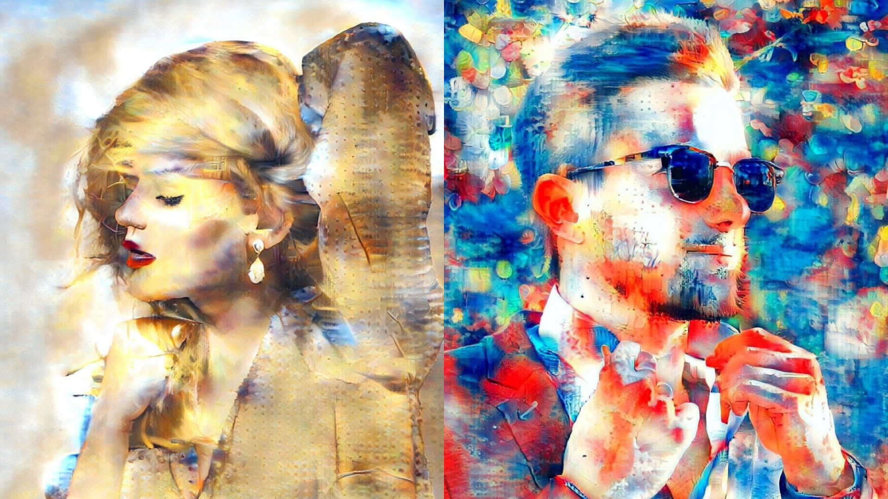
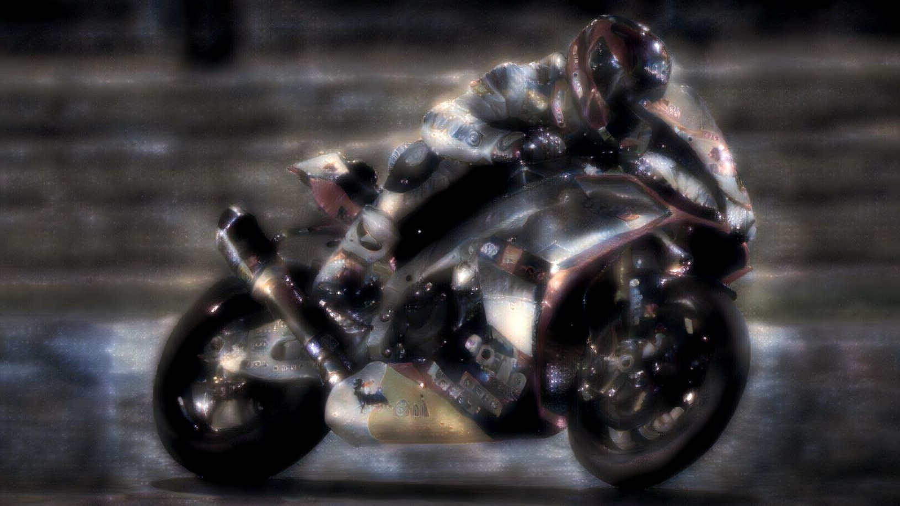
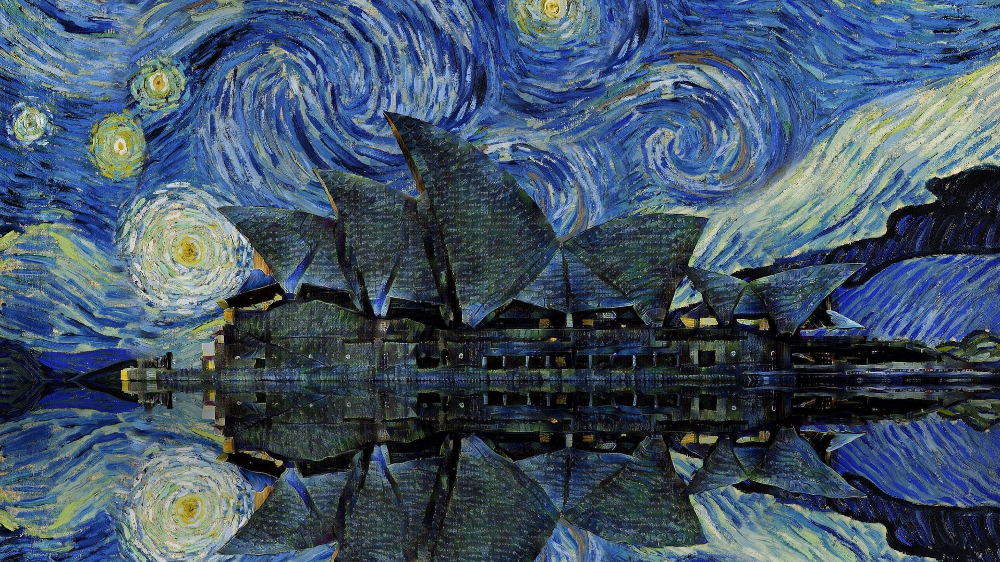

Infinite Styles.
Do things your way.
Infusion is the artist that does everything. Oil paintings, pencil sketches, even mosaics, no artistic medium is out of the bounds of Infusion. It is up to you to find a style that uniquely represents yourself. Do you want to be like Van Gogh? Paint like Picasso? The choice is yours.
Find your signature.
Stand out form the crowd.

With Infusion, you can select any photo from your photo library and use it as the style. Choose a style that is uniquely yours. When there are infinite possible styles, standing out is no issue at all.
Create something
out of this world.

Infusion's artistic genius extends to things we humans don't inherently recognise as art. Infusion can use unorthodox images - such as a picture of a galaxy - as the style input, and produce something unlike anyone has ever seen before. This is hardly surprising. Avant-garde technology leads to avant-garde art.
Remix and reinvent.
Breath new life into the past.

Since Infusion can mimic any artistic style, it means you can use it to modify any existing artwork. Learn how we made this artwork of the Sydney Opera House under a background of Van Gogh's Starry night by visiting the Infusion Tutorials website.